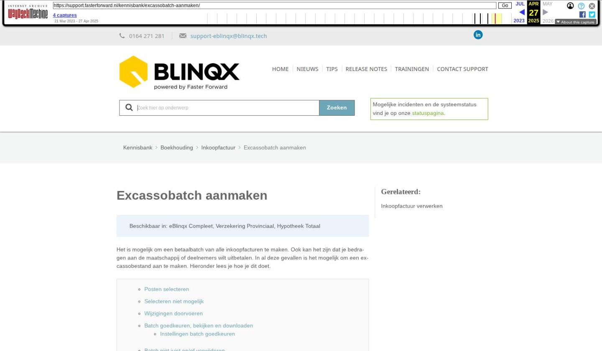

Gemakkelijk formulieren toesturen met Finly

Tekstinhoud
Gemakkelijk formulieren toesturen met Finly | Support
---
Gemakkelijk formulieren toesturen met Finly
De klant wilt bijvoorbeeld een schademelding of een opzegging doorgeven. Dit kan heel gemakkelijk door middel van de formulieren van Finly. Vanuit eBlinqx kan je via het tabblad Finly Formulieren formulieren opvragen bij Finly. Deze opgevraagde formulieren stuur je per link naar de klant. Na het invullen komt het formulier als PDF-bestand terug in eBlinqx te staan.
Koppeling inrichten
Beschikbare formulieren
Formulier aanmaken vanuit het tabblad Finly Formulieren
Correspondentieadres
Formulier verzenden naar de klant
Formulier verzenden vanuit dossier
Formulier verzenden vanuit product
Formulier verzenden vanuit schademelding
Taak na afronden formulier
Dossier exporteren
Formulier aanmaken en verzenden naar klant vanuit oude werkwijze workflows
Per e-mail
Nieuw formulier verzenden
Taken
Formulier in Uwkluis
Bijlagen
Gegevens verwijderd uit Finly
Beschikbare tags
Dossierhistorie
Koppeling inrichten
Wil je gebruik maken van het tabblad Finly Formulieren? Stuur dan een e-mail naar support-eblinqx@blinqx.tech.
Let op: voorheen werkte de koppeling met Finly door middel van workflows. Indien je gebruik maakt van deze workflows is het niet mogelijk om zowel met het tabblad als de workflows te werken. Als je over wilt stappen naar het tabblad, zullen de workflows uitgezet worden.
Beschikbare formulieren
Bij het inrichten van Finly wordt er een API-key ingesteld wat is gekoppeld aan een account. In het dropdownmenu van de formulieren worden alle formulieren getoond die aan dit account gekoppeld zijn.
Formulier aanmaken vanuit het tabblad Finly Formulieren
Om een formulier naar de klant te verzenden ga je naar het tabblad Export – Finly Formulieren. Hier klik je op de knop 'Formulier aanmaken'.
Hier vind je verschillende velden die je kunt invullen. De gele velden zijn verplicht.
Je kunt het formulier koppelen aan een product of zelfs aan een schademelding. Bij het veld Formulier staan de beschikbare formulieren. Bij het inrichten van Finly wordt er een API-key ingesteld wat is gekoppeld aan een account. In het dropdownmenu van de formulieren worden alle formulieren getoond die aan dit account gekoppeld zijn.
Als alle velden correct staan ingevuld klik je op de knop 'Formulier aanmaken'.
Correspondentieadres
Vanuit eBlinqx gaan er diverse gegevens naar Finly, waaronder het adres. Wordt het formulier niet gekoppeld aan een product dan wordt het standaard correspondentieadres van het dossier meegestuurd.
Is het formulier wel aan een product gekoppeld dan wordt het correspondentieadres gebruikt wat is geselecteerd in het product.
Formulier verzenden naar de klant
Het aangemaakte formulier zie je terug onder het tabblad Finly formulieren. Middels het oogje kan je het formulier inzien en daarbij ook de link. Daarnaast kan je de status zien, de PDF preview bekijken als het formulier is afgerond en het formulier verwijderen door middel van het rode kruisje.
Het wel of niet koppelen aan een product of schademelding bepaalt vanuit waar je de e-mail met de link naar de klant gaat versturen. Is het formulier niet gekoppeld aan een product of schademelding dan verstuur je de e-mail op 'dossierniveau'. Is het formulier gekoppeld aan een product dan verstuur je de e-mail vanuit het product. Is het formulier gekoppeld aan een schademelding dan verstuur je de e-mail vanuit de schademelding.
Formulier verzenden vanuit dossier
Het formulier is niet gekoppeld aan een product dan verstuur je de e-mail op 'dossierniveau'. Hiervoor ga je naar het tabblad Communicatie – E-mail. Je klikt op 'Opstellen'.
Vervolgens kies je voor de standaardtekst Finly – Toezenden formulier (dossier).
In de e-mail wordt de tekst met daarbij de link klaargezet. Wanneer er een actieve Uwkluis aanwezig is dan staat er in de e-mail een knop om naar Uwkluis te gaan. Je klikt op 'Verzenden'.
Let op: de link wordt opgehaald door middel van een tag. Deze tag haalt de link op van het laatste aangemaakte formulier (niet gekoppeld aan een product of schademelding).
Formulier verzenden vanuit product
Zodra het formulier is gekoppeld aan een product dan verstuur je de e-mail vanuit het product. Je gaat hiervoor naar het betreffende product en klikt op Communicatie – E-mail. Hier stel je de e-mail op.
Vervolgens kies je de standaardtekst Finly – Toezenden formulier (product).
In de e-mail wordt de tekst met daarbij de link klaargezet. Wanneer er een actieve Uwkluis aanwezig is dan staat er in de e-mail een knop om naar Uwkluis te gaan. Je klikt op 'Verzenden'.
Let op: de link wordt opgehaald door middel van een tag. Deze tag haalt de link op van het laatste aangemaakte formulier wat is gekoppeld aan dit product.
Formulier verzenden vanuit schademelding
Zodra het formulier is gekoppeld aan een schademelding dan verstuur je de e-mail vanuit de schadeverzekering – schademelding. Je gaat hiervoor naar het betreffende product en schademelding en klikt op Communicatie – E-mail. Hier stel je de e-mail op.
Vervolgens kies je de standaardtekst Schademelding – klant – Toezenden formulier (SAF) via Finly.
In de e-mail wordt de tekst met daarbij de link klaargezet. Wanneer er een actieve Uwkluis aanwezig is dan staat er in de e-mail een knop om naar Uwkluis te gaan. Je klikt op 'Verzenden'.
Let op: de link wordt opgehaald door middel van een tag. Deze tag haalt de link op van het laatste aangemaakte formulier wat is gekoppeld aan deze schademelding.
Taak na afronden formulier
Bij het aanmaken van het formulier heb je een behandelaar moeten kiezen. Deze behandelaar krijgt een taak wanneer het formulier is ingevuld en is afgerond.
Dossier exporteren
Bij het exporteren van het gekoppelde product worden de bijbehorende Finly formulieren verwijderd. Zijn er Finly formulieren aanwezig dan zullen we een melding tonen in het exporteren scherm bij het betreffende product door middel van een informatie-icoon.
Formulier aanmaken en verzenden naar klant vanuit oude werkwijze workflows
Voor 19 november 2024 was voor het versturen van formulieren Finly de werkwijze om dit door middel van workflows te doen. Hiervoor is het tabblad Finly Formulieren in de plaats gekomen, want op deze manier zijn de formulieren makkelijker te beheren. Maak je al gebruik van de werkwijze met workflows dan kan je deze blijven gebruiken.
Per e-mail
Door middel van de workflow geef je aan welk formulier je wilt opvragen. Vanuit de workflow wordt er een concept e-mail klaargezet. In deze e-mail staat een link waarmee de klant het betreffende formulier kan ophalen. De e-mail verstuur je dan ook naar de klant. Als de klant op de link klikt, wordt het formulier geopend. Deze kan de klant invullen en opslaan. Na het opslaan komt het formulier als PDF-bestand (met bestandscategorie Anders,nl) in het klantdossier onder het tabblad Documenten te staan. Betreft het een schadeformulier dan komt deze te staan onder de schademelding onder het tabblad Documenten.
Voor het formulier Risico inventarisatie geldt dat de e-mail wordt klaargezet voor de adviseur. Deze e-mail kan doorgestuurd worden naar de adviseur, zodat hij via de link de risico inventarisatie kan invullen.
Wanneer je vanuit de workflow een formulier hebt opgevraagd, wordt dit zichtbaar als je de workflow verder wilt doorklikken. In de mogelijke stappen staat dan de regel 'Wachten op binnenkomst formulier'. Hier kan je niet op klikken, deze is ter informatie. Zo weet je dat je nog wacht op binnenkomst van een formulier.
Nieuw formulier verzenden
Het is niet mogelijk om onder één product meerdere formulieren tegelijk op te vragen. De link die Finly toestuurt, wordt opgehaald door middel van een tag. Deze tag haalt de laatst toegestuurde link op. Om een nieuw formulier op te starten, wacht je totdat het eerst opgevraagde formulier binnenkomt. Daarna kan je vanuit de workflow weer kiezen voor een ander formulier.
Taken
Wanneer na 5 werkdagen het formulier nog niet is binnengekomen, wordt je hieraan herinnerd door middel van een taak. Als het formulier is binnengekomen, wordt je door middel van een taak hierop geattendeerd. De taak komt te staan op de naam van de behandelaar.
Formulier in Uwkluis
Wanneer je het formulier opvraagt dan komt dit formulier ook als verzoek klaar te staan in Uwkluis (mits de klant een actieve Uwkluis heeft). De klant kan dan gemakkelijk het formulier invullen in Uwkluis. Nadat het formulier is ingevuld, komt deze als PDF bestand in zowel het klantdossier als in Uwkluis onder Documenten te staan. Ook verdwijnt het verzoek onder het tabblad Verzoeken.
Bijlagen
Bij sommige formulieren kan de klant extra bijlagen toevoegen. Deze bijlagen komen ook in het klantdossier te staan onder het tabblad Documenten. Deze documenten hebben als protocol Finly en als soort document 'bijlage Finly formulier'. Zo is het duidelijk dat deze bijlagen/documenten horen bij een formulier wat door de klant is ingevuld.
Gegevens verwijderd uit Finly
Wanneer bovenstaand proces is doorlopen, worden de klantgegevens (dossier + personen) uit Finly verwijderd. Iedere keer wanneer je vanuit het dossier een formulier opvraagt, wordt er weer een nieuw persoon in Finly aangemaakt.
Beschikbare tags
Er zijn diverse tags die informatie ophalen over het formulier wat is opgevraagd bij Finly. Dit zijn de beschikbare tags:
Let op: deze tags halen de gegevens op van het laatste formulier wat is opgestart vanuit het dossier, de offerte en/of schademelding. Hierdoor is het niet mogelijk om meerdere formulieren tegelijk op te vragen onder het dossier of één product. Het proces van het eerst aangevraagde formulier dient helemaal doorlopen te zijn, voordat een ander formulier opgevraagd kan worden.
Dossierhistorie
Als er bij Finly een formulier is opgevraagd, komt dit ook te staan in de Dossierhistorie van het klantdossier.
Laatste update: 27 mei 2026
Was deze informatie nuttig?
Ja Nee